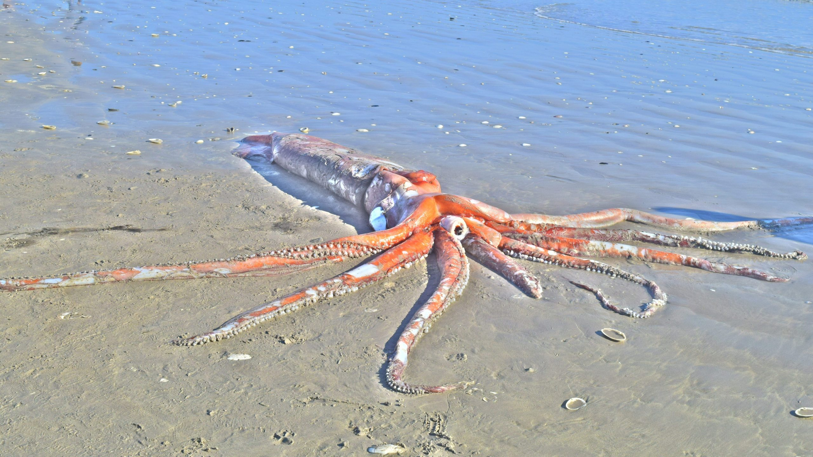
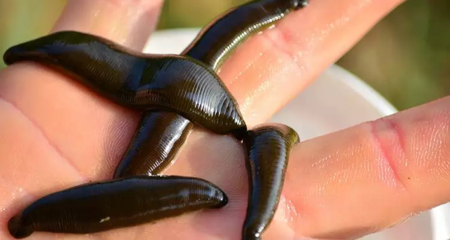
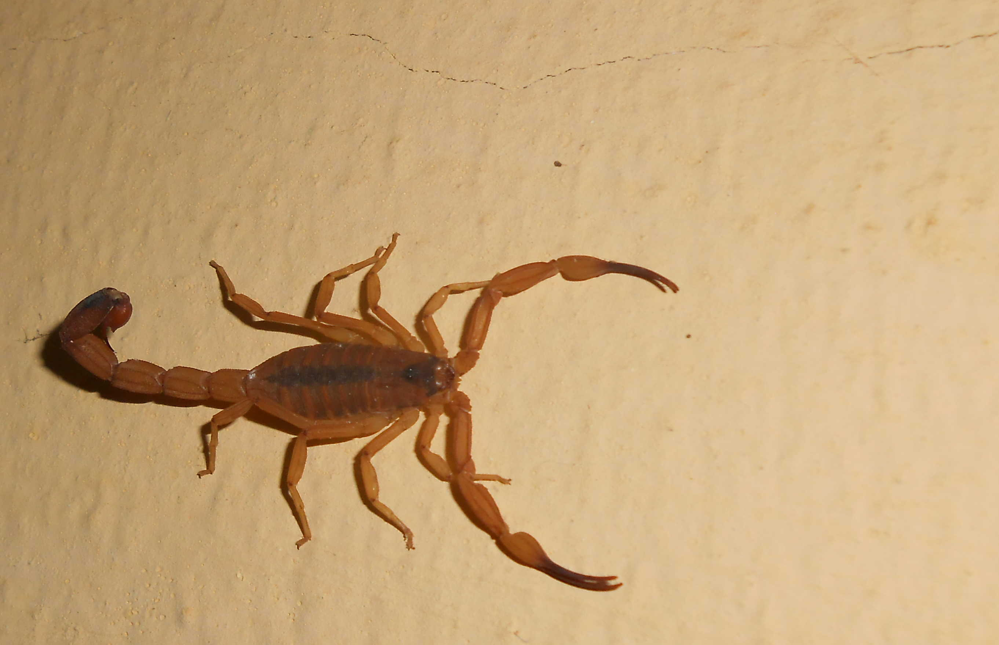
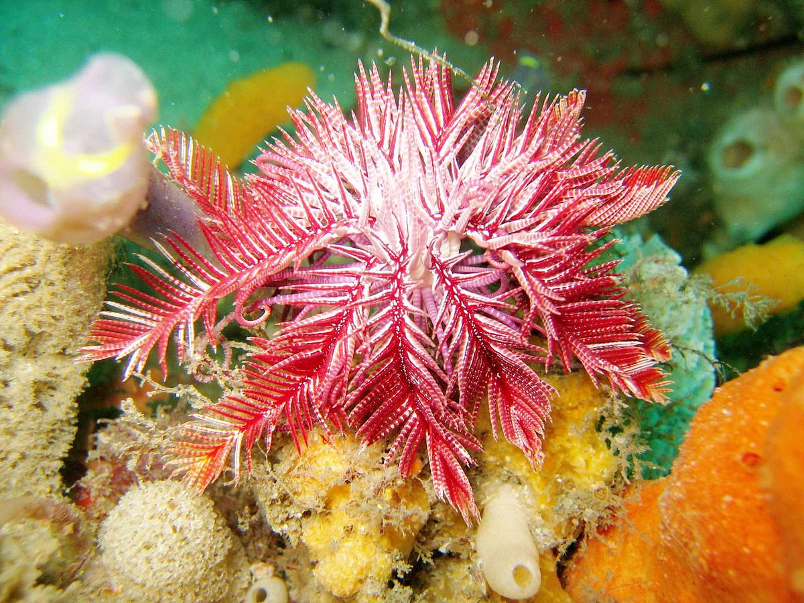

Grupos Representantes
Moluscos
Os moluscos são animais de corpo mole, geralmente envoltos por uma concha.
A concha é presente em ostras, mariscos, caracol e caramujo. Em alguns, como a lula, a concha é interna e em outros, é ausente, como no polvo, Possuem Sistema Digestório completo e o corpo é divido em cabeça, pé e massa visceral.
A Lula-Gigante (Architeuthis) conhecida por ser o segundo maior invertebrado existente na Terra, perdendo apenas para a lula-colossal. é uma espécie de lula com tamanho superior a 10 metros. A lula-gigante tem ainda um dos maiores olhos de todas as criaturas vivas.

Anélideos
São animais que apresentam o corpo segmentado, isto é, dividido em anéis. Dentre os animais pertencentes a essa classificação, o mais conhecido do filo Annelida é a minhoca (Lumbricina), são moles, invertebrados, alongados e possuem formato de cilíndros.

Artrópodes
São animais dotados de patas articuladas (filo Arthropoda) e que possuem esqueleto externo (exoesqueleto) nitidamente segmentado. Entre eles podemos citar o escorpião-do-nordeste (Tityus Stigmurus) possuem coloração de camuflagem amarelada, para se confundir com o solo arenoso das regiões áridas em que habita. É facilmente identificado por possuir um triangulo de coloração negra sobre o cefalotórax, acompanhado de uma faixa, de coloração também escura, ao longo do corpo.

Esquinodermos
São triblásticos, celomados e deuterostômios. Durante a fase larval apresentam simetria bilateral e na fase adulta, a simetria é radial.
Os animais equinodermos apresentam uma grande diversidade de formas, tamanhos e modos de vida.
São animais de vida livre e isolados, poucas espécies vivem fixas a um substrato. Um exemplo de equinodermo séssil é o lírio-do-mar(Crinoidea) O lírio do mar ou crinóide é composto por um pequeno corpo, chato e pentagonal e de 5 braços, que é a parte mais visível para os mergulhadores,
Pequenos apêndices se estendem das laterais de seus braços, criando uma estrutura que lembra uma pena,
Os braços são utilizados para capturar partículas em suspensão que são ingeridas pelo crinóide,
Mudou muito pouco quando comparado com seus parentes fósseis, por isso ganhou o título de fóssil vivo.

Cordados
Representam o grupo de animais do filo Chordata. São representados por alguns invertebrados aquáticos e todos os vertebrados: peixes, anfíbios, répteis, aves e mamíferos.
A característica principal deste filo é que durante a fase embrionária todos apresentam tubo nervoso dorsal, notocorda, fendas faringianas e cauda pós-anal, como a Salpa (Salpidae) caracterizadas por corpos gelatinosos de forma cilíndrica. Estes organismos movem-se bombeando a água longitudinalmente através dos seus corpos, ao mesmo tempo que a filtram num conjunto de estruturas lamelares internas nas quais retêm o plâncton, o seu único alimento conhecido.

Bibliografia
-
Toda Matéria - Poríferos
-
Lula Gigante
-
Minhoca
-
Escorpião-Do-Nordeste
-
Lírio-Do-Mar
-
Salpa